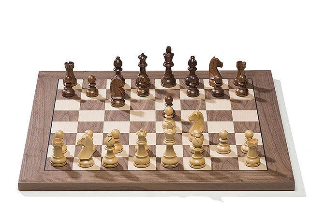

I play chess in my free time because it is my hobby and passion. There are a number of hobbies to choose from but I find chess the best and most fascinating. For me there cannot be a better pursuit than playing chess in my spare time. It not only keeps me busy but also gives entertainment, provides a welcome change and creative satisfaction. However, it is never an obsession with me. It best suits my aptitude and liking. I was initiated into the game by my late father when I was just 6 years old. My father was a very good player of chess and would play it on Sundays and other holidays in the afternoon with his friend. It was really fascinating to see them get so absorbed in it that it made them forget everything around them. Their playing sessions would sometimes extend into late nights. Sometimes, when there was a power-failure or load-shedding, they would continue their game in candlelight. I learnt the finer points and strategies of the game by watching them play
